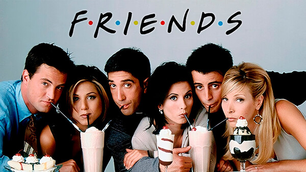

Friends é uma série de comédia americana que estreou em 1994. A série acompanha a vida de seis amigos que vivem em Nova Iorque.
Ao longo de 10 temporadas, acompanhamos as aventuras de Rachel, Monica, Phoebe, Ross, Chandler e Joey. A série mostra as suas amizades, relações amorosas e situações engraçadas do dia a dia.

Para saberes mais sobre a série, visita:
Friends no IMDb